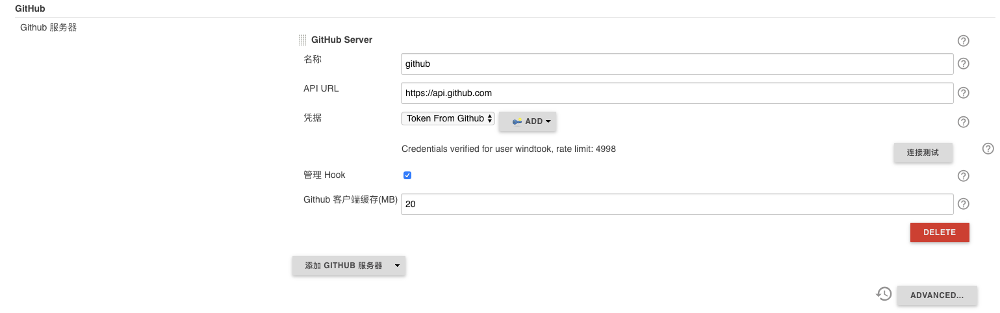
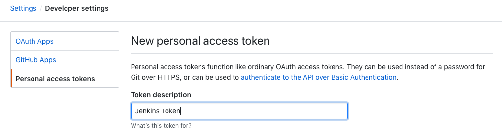
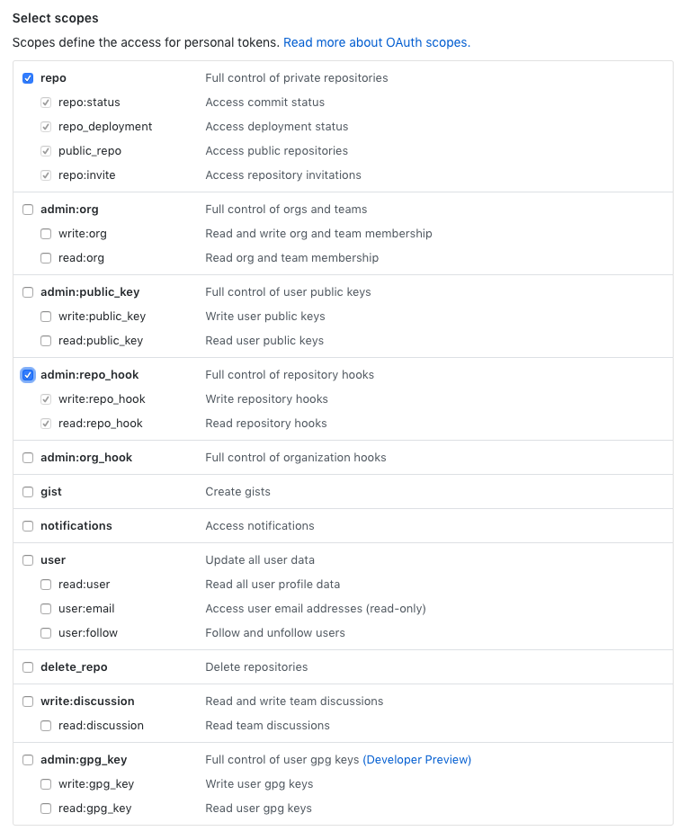
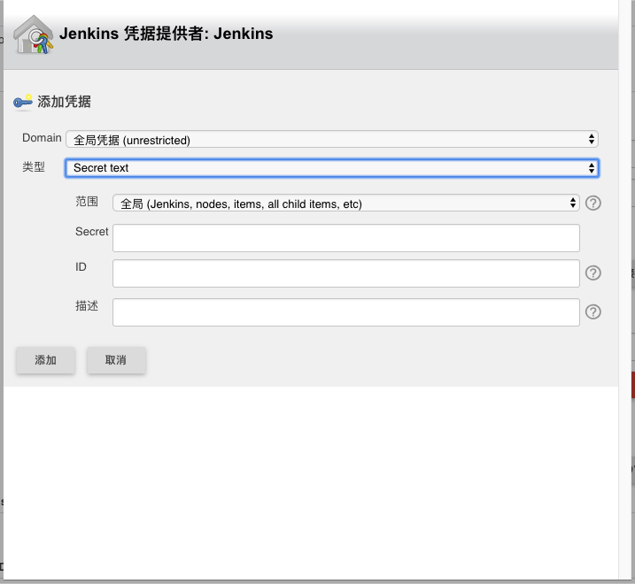
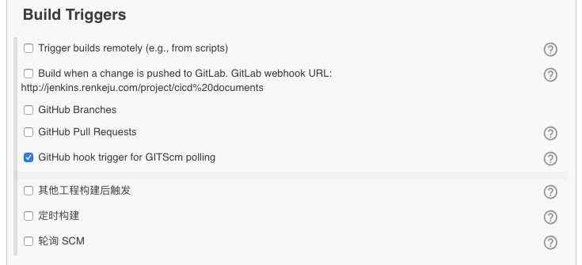
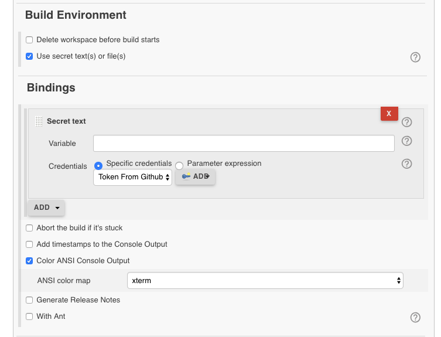
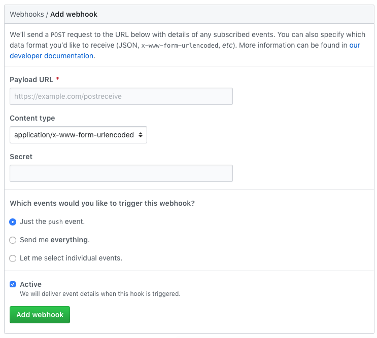
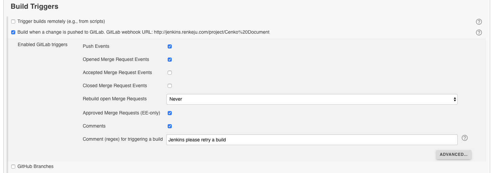
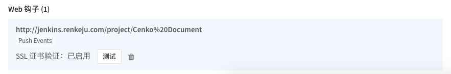

webhook¶
Webhook，也就是人们常说的钩子。你可以通过定制 Webhook 来监测你在 Github.com 上的各种事件，最常见的莫过于 push 事件。 如果你设置了一个监测 push 事件的 webhook，那么每当你的这个项目有了任何提交，这个 webhook 都会被触发，这时 Github 就会发送一个 HTTP POST 请求到你配置好的地址。
如此一来，你就可以通过这种方法去自动完成一些重复性工作；比如，你可以用 Webhook 来自动触发一些持续集成（CI）工具的运作， 比如 Travis CI；又或者是通过 Webhook 去部署你的线上服务器。
Gtihub Webhook¶
配置 github 插件¶
点击 系统管理 -> 系统设置 进入页面，选择 Github 插件配置项。
其中的 API URL 不需要修改，点击 Credentials 的 Add 增加一个 jenkins 访问 github 的 token；到这里我们需要去 Github.com 创建一个 Token 给 Jenkins 使用，所以切换到 github 页面。
打开 Github，点击 setting -> Developer settings -> Personal access tokens -> Gernerate new token，填写 Token 描述。
下面的 scops 选择如下：
点击下方 Generate token 会生成一串字母，这一串字母就是给 Jenkins 分配的认证码；点击复制，回到 Jenkins。
- Kind 选择 Secret text
- Secret 填入刚刚从 Github.com 生成的 Token
- Description 填写对此 Secret text 的描述
填写完成后，点击 Test connection 测试与 Github 的连接。
项目配置¶
构建触发器选择 Github hook trigger for GITScm polling， 在不知道那么版本的时候，Build when a change is pushed to Github 改成了 Github hook trigger for GITScm polling
构建环境选择如下图，下面的 Bindings 中 Credentials 选择之前添加的 Token
配置 github 的 webhook¶
回到 github 页面，选择你需要配置的仓库，点击 Settings，注意是指定仓库的 Settings， 跟之前的 github 的 settings 是不同的。
webhook 页面配置钩子；完成后点击 Add webhook
一般 payload URL 添加为 http[s]://${jenkins_url}:${jenkins_port}/github-webhook/，配置完成，
在 github 上传一个文件试试看吧。
Gitlab webhook¶
配置 Gitlab hook 插件¶
通常 jenkins 在项目配置时是可以配置远程构建触发器，设置好 jenkins 的回调 url 后就可以让 jenkins 进行自动构建。 这就需要先下载 Gitlab Hook plugin 插件。登陆 Jenkins，点击 系统管理 -> 插件管理 -> 可选插件，选择安装 Gitlab Hook Plugin
当我们创建一个新的项目之后，jenkins gitlab hook plugin 会帮助我们生成一个回调地址。在任务重构建触发器喜爱获取回调 URL。
配置 gitlab 项目¶
登陆 gitlab 项目中，点击项目的 编辑项目（settings），找到 Webhooks 点击进入页面。
将 jenkins gitlab hook plugin 生成的回调地址填写到 URL 中。 添加成功后，点击此 webhook 后面的 test 进行测试。
如果返回 Hook successfully executed 表示配置成功。
jenkins 权限设置¶
gitlab 的 webhooks url 是根据 jenkins 构建权限连接设置的，
如果必须登陆才能构建就必须获取jenkins的用户名及 token，可以在 jenkins 用户-设置里面查看到，
url 格式为： http://<username>:<api-token>@<jenkins-server>:<jenkins-port>/
当在gitlab上测试webhook报错 Hook executed successfully but returned HTTP 403，我们必须进入 jenkins
系统设置 -> 全局安全配置（Configure Global Security）中，关闭 Prevent Cross Site Request Forgery exploits ，
然后再点击 gitlab webhooks 测试返回 201 成功。